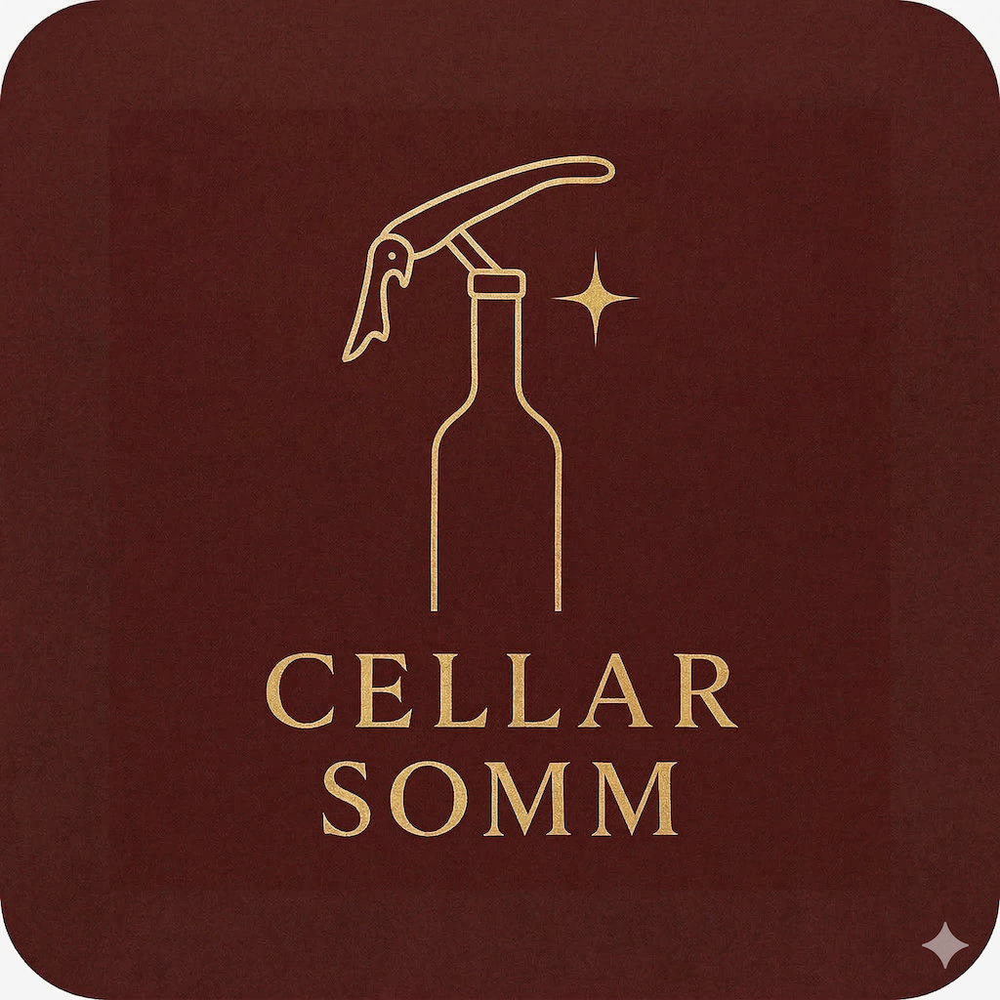
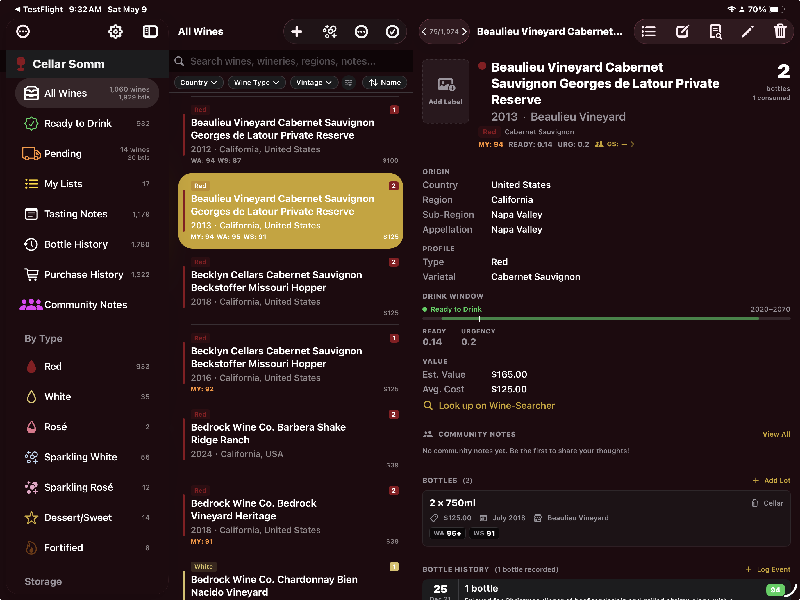
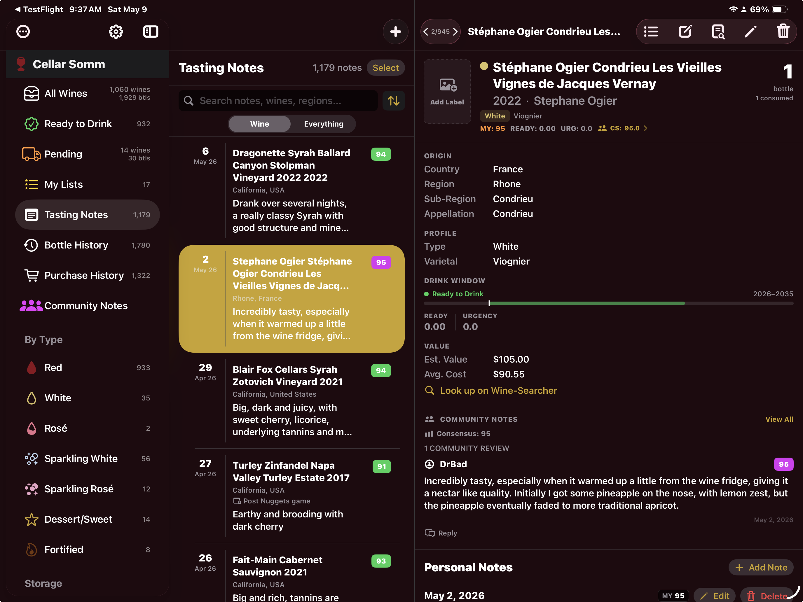
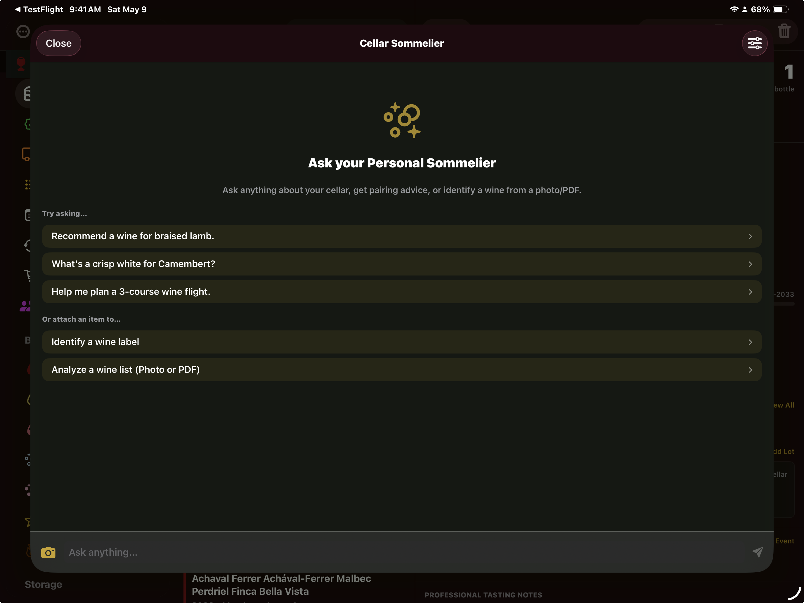
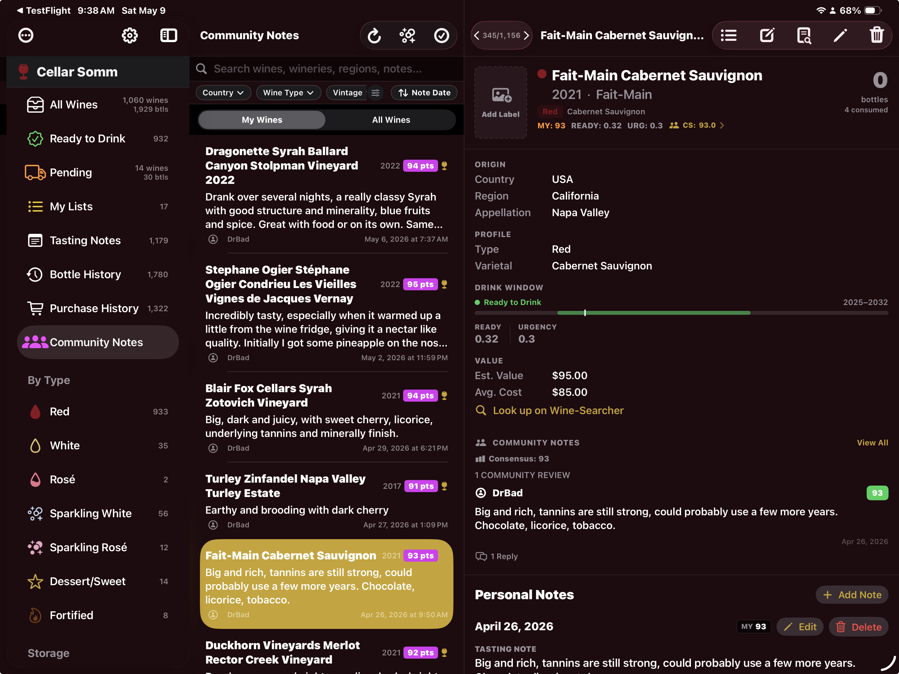

Your AI-powered wine cellar manager. Track every bottle, log tasting notes, and get sommelier intelligence.
Download on the App StoreAvailable on iPad and Mac




Add wines with detailed profiles — winery, vintage, varietal, region, appellation, and more. Track multiple bottle lots per wine with storage locations, bin assignments, purchase details, and pending shipments.
Log every bottle you open with tasting notes, scores on a 100-point scale, occasion, and companions. Browse and search your complete tasting history. Share your notes with the Cellar Somm community.
Chat with an AI sommelier that knows your entire cellar. Get detailed wine summaries with critic scores, personalized meal pairings from your collection, and cellar insights. Powered by Google Gemini with your own free API key.
Import your cellar from CellarTracker via CSV, paste an invoice for AI-powered extraction, or import professional reviews from Wine Advocate, Vinous, James Suckling, Jeb Dunnuck, and more.
Share tasting notes with the Cellar Somm community. See what other collectors think about wines in your cellar. Reply, discuss, and discover new perspectives. You maintain full control over your community notes.
Track every bottle event — drinking, gifting, selling, or missing. View your complete bottle history with powerful search, event type filtering, and sort options. Know exactly what happened to every bottle.
Monitor your cellar's estimated value at a glance. Track purchase prices, stores, and dates. Browse your complete purchase history grouped by wine, date, and price.
Describe your meal or occasion and get personalized wine recommendations from your own collection. Filter by ready-to-drink status, minimum score, and price range.
Created by a NASA engineer who loves wine!
Cellar Somm is built by an aerospace engineer with 14 NASA interplanetary missions under his belt — from Mars landers to deep space probes around Jupiter. The same attention to detail that goes into exploring other worlds now goes into helping you manage and enjoy your wine collection.